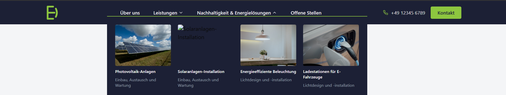
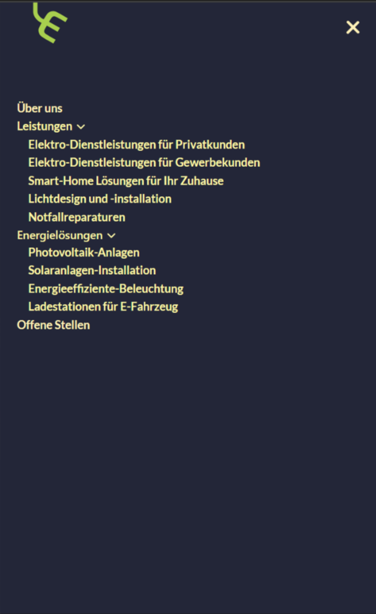
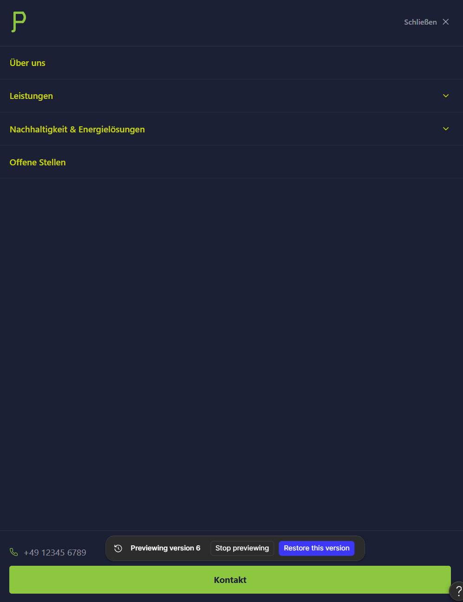
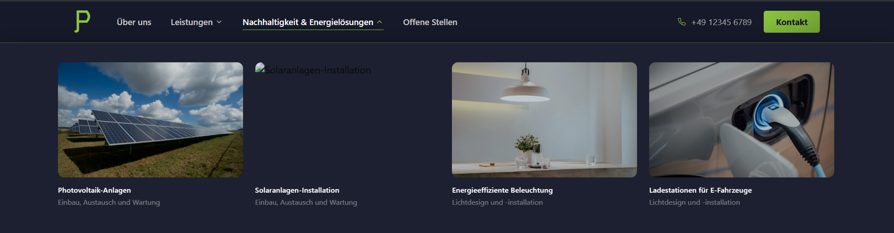

The setup
- I pasted six screenshots of an existing responsive navbar to Figma Make, covering desktop, tablet, two mobile breakpoints, and the mobile drawer overlay, then asked it to reproduce the component in code.

- After assessing the output, I asked Figma Make whether it had copied the design one to one, improved on it, or produced something closer to a modern redesign. It gave a surprisingly candid answer: "closer to a faithful copy with small practical fixes," set against its own list of shortcomings, an approximated logo, and dropdown panel width and card proportions that might differ slightly from the original.
- I decided to split the work into two explicit tracks: Version B for tightening fidelity, Version C for a deliberate, elevated redesign, rather than continuing to iterate in one undefined direction.
- I continued with Version C and checked whether that self-assessment would hold up. It turned out to understate the gap: the logo, the nav alignment, and the typeface had all diverged more than "small fixes" implied, the first sign that a tool's account of its own work needs independent verification, not passive acceptance.
What a structured review caught
Five findings emerged, each belonging to one of two failure modes: missing input, where the tool guessed confidently from incomplete source material, or unverified output, where a claim needed to be checked against reality before it could be trusted.
The very first output already showed it: the mark rendered as "E)", a malformed arc, visible in the initial build before any review began. A later version rendered it as "P", a different malformed arc traced to a misplaced SVG control point. Neither was resolved by the tool reasoning its way to a fix. The correct mark appeared only once the actual Logotype.svg was uploaded directly. The tool had never seen the real asset, only a shape inferred from screenshots.
The rendered nav text came out noticeably narrower and more tightly tracked than the original. Checking the browser's computed style panel for the nav element directly showed it renders with ui-sans-serif, system-ui, sans-serif, Tailwind's default stack. The nav never had a custom typeface in the first place. Figma Make's own account of its process was candid about the same gap: working from screenshots alone, without OCR or font-detection tools, it landed on Inter as a visual judgment call, which happens to closely resemble the system-UI fonts it was actually looking at.
That correction opened a real design decision: keep Inter, or revert to the same bare system stack the original used. A system stack renders differently by design across operating systems, San Francisco on macOS, Segoe UI on Windows, Roboto on Android, which works against a branded site's consistency. Inter was built specifically for screen UI, costs roughly 30KB with display=swap, and closely resembles the system fonts it was mistaken for in the first place, so it was kept.
Two text elements failed WCAG AA once measured directly: a dropdown subtitle at 3.3:1 and a mobile sub-caption at 3.9:1, against a 4.5:1 requirement. Both looked readable enough on a bright screen. Corrected by raising opacity to roughly 0.55, around 6.2:1. Worth noting: this came from asking Figma Make pointed questions directly, a conversational capability, not a dedicated audit feature. Real WCAG scanners and heuristic-evaluation tools exist as separate plugins for Figma itself, not built into Figma Make.
The original reference had no phone number in the mobile menu at all, and its chevrons sat on the right too, same as Figma Make's version. What made the original intelligible despite not being optimized for mobile wasn't alignment, it was proximity: each chevron sat directly against its label, so the two read as one grouped unit. Figma Make kept the right-side placement but lost that closeness, pushing the chevrons out toward the far edge, disconnected from the label they belonged to, and added a phone number that didn't exist in the reference at all, dropped in at the bottom of the menu where it read as an afterthought. The tool was candid about the second problem once asked: an attempt to make the chevrons "subtle" had left them looking disconnected instead.


One dropdown card, for Solaranlagen-Installation, pointed to a dead image URL, visible in that same very first output shown above. It survived multiple iterations and two separate design tracks without being noticed. Catching it had nothing to do with reviewing color, contrast, or hierarchy. It required a different kind of check altogether: simply confirming whether the content rendered at all.

Two failure modes, and the instinct that tells them apart
Missing input describes the logo and font problems: the tool guessed confidently from incomplete source material and never signaled that it was guessing. Both resolved faster by going straight to the actual source, the SVG file, the computed style panel, than any further round of prompting would have. Unverified output covers the contrast failures, the hierarchy problems, and the broken image: each one only came to light because something specific got checked instead of just trusted.
Everything above comes from examining the rendered output, the browser's computed styles, and the tool's own stated reasoning, not a line-by-line audit of the underlying implementation, that might be added later on. One open question also stays open rather than asserted: whether the same approach extends to performance, image sizing, render-blocking resources, load times, is untested here.